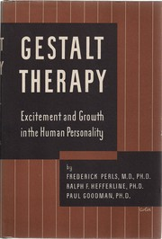

《格式塔治疗：人格中的兴奋与成长》
书·Frederick Perls, Ralph Hefferline, Paul Goodman, 1951·Gestalt Therapy: Excitement and Growth in the Human Personality

格式塔治疗的奠基性著作：前半部分是一套体验练习，后半部分阐述理论，强调当下的觉察、接触与未完成的“事情”。中译名未核实，此处中文题名为直译或沿用旧数据。
- 作者
- Frederick Perls, Ralph Hefferline, Paul Goodman
- 年份
- 1951
- 难度
- 深读
- 类型
- 理论原著
- 所属学派
- 格式塔治疗
- 核心理论
- 两把椅子技术
版本
- 中文版 《格式塔治疗：人格中的兴奋与成长》 [德] 弗雷德里克•皮尔斯（Frederick Perls） / [美]拉尔夫•赫弗莱恩（Ralph Hefferline） / [美]保罗•古德曼（Paul Goodman） · 吴思樾 译 / 程无一 校译 译 · 南京大学出版社 · 2023 豆瓣 7.8 分（18 人评价） 豆瓣页面 ↗
- 英文版 Gestalt Therapy: Excitement and Growth in the Human Personality Frederick Perls, Ralph Hefferline, Paul Goodman · Julian Press, first edition · 1951 Open Library ↗